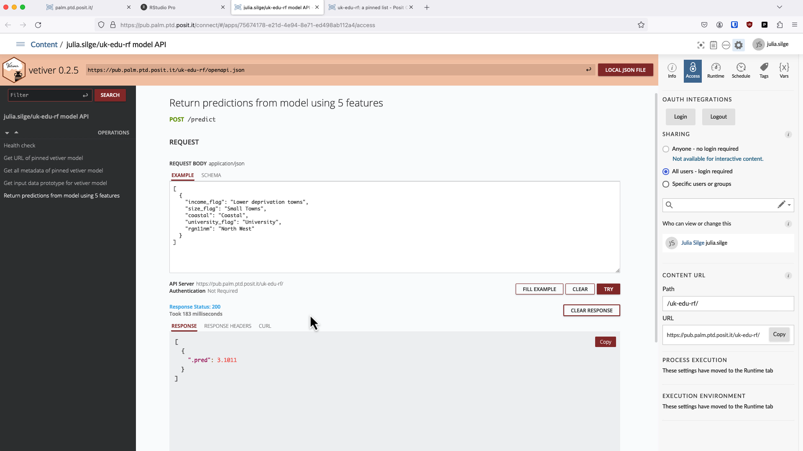

Educational attainment in #TidyTuesday UK towns
By Julia Silge in rstats tidymodels
April 24, 2024
This is the latest in my series of
screencasts! This screencast focuses on how to use
Posit Team for the ML lifecycle from EDA through model development and then deployment, with a recent
#TidyTuesday dataset on educational attainment in UK towns. This screencast and blog post are part of the monthly
Workflows with Posit Team series.
Here is the code I used in the video, for those who prefer reading instead of or in addition to video. In the video, you’ll notice I’m working on Posit Workbench.
Explore data
Our modeling goal is to predict the educational attainment in UK towns, based on various characteristics of those towns. Let’s start by reading in the data:
library(tidyverse)
education <- read_csv('https://raw.githubusercontent.com/rfordatascience/tidytuesday/master/data/2024/2024-01-23/english_education.csv')
glimpse(education)
## Rows: 1,104
## Columns: 31
## $ town11cd <chr> "E34…
## $ town11nm <chr> "Car…
## $ population_2011 <dbl> 5456…
## $ size_flag <chr> "Sma…
## $ rgn11nm <chr> "Eas…
## $ coastal <chr> "Non…
## $ coastal_detailed <chr> "Sma…
## $ ttwa11cd <chr> "E30…
## $ ttwa11nm <chr> "Wor…
## $ ttwa_classification <chr> "Maj…
## $ job_density_flag <chr> "Res…
## $ income_flag <chr> "Hig…
## $ university_flag <chr> "No …
## $ level4qual_residents35_64_2011 <chr> "Low…
## $ ks4_2012_2013_counts <dbl> 65, …
## $ key_stage_2_attainment_school_year_2007_to_2008 <dbl> 65.0…
## $ key_stage_4_attainment_school_year_2012_to_2013 <dbl> 70.7…
## $ level_2_at_age_18 <dbl> 72.3…
## $ level_3_at_age_18 <dbl> 50.7…
## $ activity_at_age_19_full_time_higher_education <dbl> 30.7…
## $ activity_at_age_19_sustained_further_education <dbl> 21.5…
## $ activity_at_age_19_appprenticeships <dbl> NA, …
## $ activity_at_age_19_employment_with_earnings_above_0 <dbl> 52.3…
## $ activity_at_age_19_employment_with_earnings_above_10_000 <dbl> 36.9…
## $ activity_at_age_19_out_of_work <dbl> NA, …
## $ highest_level_qualification_achieved_by_age_22_less_than_level_1 <dbl> NA, …
## $ highest_level_qualification_achieved_by_age_22_level_1_to_level_2 <dbl> 34.9…
## $ highest_level_qualification_achieved_by_age_22_level_3_to_level_5 <dbl> 39.7…
## $ highest_level_qualification_achieved_by_age_22_level_6_or_above <dbl> NA, …
## $ highest_level_qualification_achieved_b_age_22_average_score <dbl> 3.32…
## $ education_score <dbl> -0.5…
How does the education_score vary across towns and cities?
education |>
filter(!is.na(income_flag)) |>
mutate(income_flag = factor(income_flag, levels = c("Lower deprivation towns",
"Mid deprivation towns",
"Higher deprivation towns",
"Cities"))) |>
ggplot(aes(education_score, income_flag, fill = size_flag)) +
geom_boxplot(alpha = 0.2) +
labs(y = NULL, fill = NULL)

It definitely looks like there is variation across income and size, and we will want to train a model that can use that variation to predict the educational attainment.
Build a model
We can start by loading the tidymodels metapackage, splitting our data into training and testing sets, and creating bootstrap resamples. Think about this stage as spending your data budget.
library(tidymodels)
set.seed(123)
edu_split <-
education |>
filter(str_detect(income_flag, "deprivation towns")) |>
select(education_score, income_flag, size_flag, coastal, university_flag, rgn11nm) |>
initial_split(strata = education_score)
edu_train <- training(edu_split)
edu_test <- testing(edu_split)
set.seed(234)
edu_folds <- bootstraps(edu_train, strata = education_score)
edu_folds
## # Bootstrap sampling using stratification
## # A tibble: 25 × 2
## splits id
## <list> <chr>
## 1 <split [810/298]> Bootstrap01
## 2 <split [810/294]> Bootstrap02
## 3 <split [810/302]> Bootstrap03
## 4 <split [810/307]> Bootstrap04
## 5 <split [810/300]> Bootstrap05
## 6 <split [810/311]> Bootstrap06
## 7 <split [810/272]> Bootstrap07
## 8 <split [810/302]> Bootstrap08
## 9 <split [810/298]> Bootstrap09
## 10 <split [810/306]> Bootstrap10
## # ℹ 15 more rows
Now let’s create a modeling workflow for this data, with a straightforward formula preprocessor and a random forest model. Random forest models tend to work well with rectangular data as long as you have enough trees, even without hyperparameter tuning. How well does this do in our situation here?
library(future)
plan(multisession, workers = 4)
edu_wf <- workflow(
education_score ~ .,
rand_forest(mode = "regression", trees = 500)
)
set.seed(123)
edu_res <- fit_resamples(edu_wf, edu_folds)
collect_metrics(edu_res)
## # A tibble: 2 × 6
## .metric .estimator mean n std_err .config
## <chr> <chr> <dbl> <int> <dbl> <chr>
## 1 rmse standard 2.71 25 0.0213 Preprocessor1_Model1
## 2 rsq standard 0.458 25 0.00676 Preprocessor1_Model1
The rmse metric is on the same scale as education_score, our outcome. If we decide this model is good enough for our purposes, we can then use last_fit() to fit one final time to the training data and evaluate one final time on the testing data.
edu_fit <- last_fit(edu_wf, edu_split)
collect_metrics(edu_fit)
## # A tibble: 2 × 4
## .metric .estimator .estimate .config
## <chr> <chr> <dbl> <chr>
## 1 rmse standard 2.55 Preprocessor1_Model1
## 2 rsq standard 0.492 Preprocessor1_Model1
Notice that this is the first time we’ve used the testing data. Our metrics on the testing data are about the same as from our resampling folds. Let’s evaluate the predictions on the testing data visually:
collect_predictions(edu_fit) |>
ggplot(aes(education_score, .pred)) +
geom_abline(slope = 1, lty = 2, linewidth = 1.5, alpha = 0.7) +
geom_point() +
coord_fixed()

We can see from this visualization that we are doing a worse job predicting the highest educational attainment scores. This is a common problem to run into when training models, and it is something to keep in mind as we think about how to use this model in practice.
Deploy our model
So far, we have covered EDA and model development, including evaluating our model. Now we can deploy our model for use in production. Let’s extract the final fitted workflow from our last_fit() object, and then create a deployable model bundle using
vetiver.
library(vetiver)
v <- extract_workflow(edu_fit) |>
vetiver_model(
"uk-edu-rf",
metadata = list(metrics = collect_metrics(edu_fit))
)
v
##
## ── uk-edu-rf ─ <bundled_workflow> model for deployment
## A ranger regression modeling workflow using 5 features
When you use vetiver_model(), some model metadata is automatically included, but we also can store custom metadata that we want to use later, like the metrics from model development. After our deployable model bundle is created, we can store and version it using
pins. We’ve been working on Posit Workbench so far, and now for the first time we are going to be using Posit Connect, as our deployment target for both the model binary object and model API.
library(pins)
board <- board_connect()
board |> vetiver_pin_write(v)
When we use vetiver_pin_write(), we store and publish a versioned model binary together with its metadata on Connect. Posit Connect can be used as a model repository with this approach. After the versioned model object is safely stored, we can deploy an API to generate predictions using this model:
vetiver_deploy_rsconnect(
board,
"julia.silge/uk-edu-rf",
predict_args = list(debug = TRUE)
)
Because we are using Posit Team, we automatically get exactly the right versions of the packages needed for prediction installed in the production environment using Posit Package Manager. It’s pretty fast too!
We automatically get some default visual documentation for our model, which can be shared with colleagues who need to know how the model API works and how to interact with it:

Since we deployed our model as a REST API, anyone can query it using curl or their own choice of programming language or similar. There is special support for getting predictions in R as well, treating the endpoint for predictions almost the same as a model in memory. First we create a vetiver endpoint object:
url <- "https://pub.palm.ptd.posit.it/uk-edu-rf/predict"
endpoint <- vetiver_endpoint(url)
endpoint
##
## ── A model API endpoint for prediction:
## https://pub.palm.ptd.posit.it/uk-edu-rf/predict
Then we can use the predict() function to get predictions from the model API. We can pass in a dataframe of new data to get predictions for, and we can also pass in any necessary headers. Here we are using an API key for authentication, since I set the access to this API to require that:
connect_auth <- httr::add_headers(
Authorization = paste("Key", Sys.getenv("CONNECT_API_KEY"))
)
predict(
endpoint,
slice_sample(edu_test, n = 10),
connect_auth
)
## # A tibble: 10 × 1
## .pred
## <dbl>
## 1 -2.84
## 2 2.52
## 3 0.678
## 4 2.69
## 5 -2.78
## 6 3.78
## 7 -1.24
## 8 -2.54
## 9 -2.51
## 10 -2.79
Using Posit Team throughout the ML lifecycle provides a great experience, and we were able to:
- Explore our data and develop our model on Posit Workbench
- Deploy our model to Posit Connect
- Use the correct versions of packages for prediction with Posit Package Manager
At the same time, since we used open source packages like tidymodels and vetiver for model development and deployment, we aren’t locked in to any given infrastructure or set of professional tools. We can use the same code and the same models in an entirely different environment if we need to!
- Posted on:
- April 24, 2024
- Length:
- 7 minute read, 1363 words
- Categories:
- rstats tidymodels
- Tags:
- rstats tidymodels